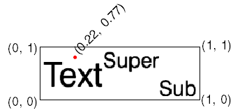

The IDLgrText:: GetIndexAtCoord function method returns the index of the character in the string closest to a specified screen coordinate.
Tip: In the context of this method, screen coordinates are normalized coordinates defined by the bounding box of the text object.
Result = Obj ->[ IDLgrText ::]GetIndexAtCoord( Window, X, Y )
An integer specifying the character index of the character closest to the position specified by X and Y .
An object reference to the IDLgrWindow object in which the text appears.
A floating-point value between 0.0 and 1.0 specifying the horizontal coordinates relative to the bounding box of the text object.
A floating-point value between 0.0 and 1.0 specifying the vertical coordinates relative to the bounding box of the text object.
None
The bounding box of the IDLgrText object is defined as shown below. The coordinates are the same regardless of the size of the text box. So the following call:
index=Obj->GetIndexAtCoord(oWin, 0.22, 0.77)
returns 2, which is the index of the closest insertion point.

GetIndexAtCoord Example
See Character Indices in Text Strings for more information.
|
7.0.6 |
Introduced |